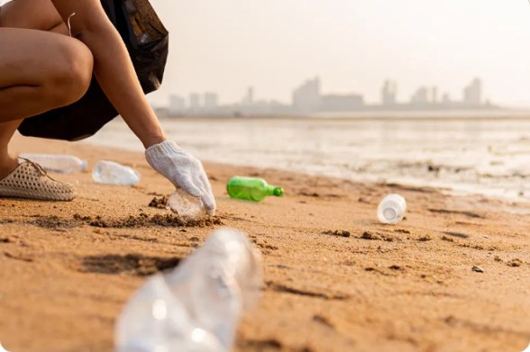
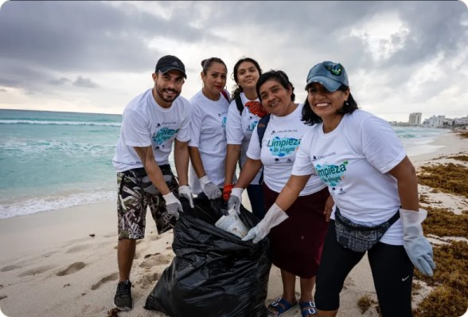

Ideas atlia
Queremos hacer una limpieza de playa
Una de nuestras propuestas futuras es organizar una jornada de limpieza de playa. Queremos reunir a estudiantes, familias y vecinos para recoger residuos, aprender sobre la importancia de las costas y compartir formas de cuidarlas mejor.
Estamos pensando en cómo hacerla accesible, segura y divertida, con materiales didácticos, actividades para todas las edades y una invitación clara para que más personas se sumen.


¿Quieres sumarte?
Participa con nosotros
Si te interesa colaborar o tienes ideas para nuevas actividades, escríbenos. Estamos preparando más contenido y acciones para compartir.
Quiero participar